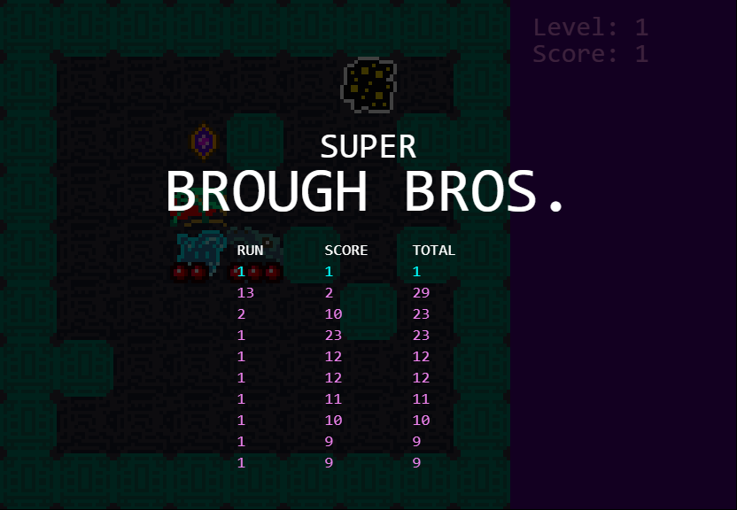

Stage 6 - Treasure & Score
To give our game some replayability, we'll add a high score mechanic. The player will pick up a treasure to gain a point, but doing so will spawn another monster. Each level will have 3 treasures. This system will be supported by a
variable that resets to
before every game.
Drawing the treasure sprite
You have plenty of options for representing treasure. Gems, jewelry, piles of gold, treasure chests, whatever.
For gold, you typically want to use a yellowish-orange base with very high contrast. For gems, pick bright colors and angular highlights/shadows.
Generating treasure
To achieve our treasure mechanic, we need very little: mainly a boolean flag to each tile denoting it has treasure on it. If a tile has treasure, the treasure sprite will be drawn on top.
map.js
tile.js
With that, our treasure is in the game and being drawn. You can test it out yourself to see.
Keeping score
Let's make the treasure meaningful. We need to initialize our
variable every time we start a new game. Then when a treasure gets picked up (by the player stepping on a tile that has one), the
is increased, the
flag is reset which effectively deletes the treasure, and we spawn a monster.
game.js
tile.js
And now that we wrote our
function last time, showing our current score is very easy. The calls to draw the current level and current score only differ by text and Y position, which we're manually hardcoding.
game.js
High scores
If we have a score, we certainly need a high score board. The following additions add a score array to a browser storage mechanism called
,
which we'll then retrieve and display on the title screen. The cool thing is, despite being super simple to use (i.e. a dumping ground where we can throw any string variables we want),
will preserve our score data across page refreshes and browser launches.
Since everything you put in
needs to be a string and we would prefer to put objects in there, we're converting back and forth from
JSON. If you don't know JSON, not to worry! It's a data format that looks much like JavaScript and all you need to utilize it is two built in functions.
First let's try to grab the scores, whether there's some there or not.
game.js
If we've not yet saved anything to localStorage, we simply return an empty array. But if we have, we take what's there,
it as JSON, and return the result.
Now let's write the function to add a score.
game.js
In this game you'll be able to continue a high score if you won the last game. This lets you attempt win streaks, a common thing to find in broughlikes.
Our
function takes two variables: a numeric score and a flag telling us if we won the game or died.
Here's the breakdown of what we're doing:
- retrieving our scores
- creating a new to be added onto the list later
- doing a to get the
- if that score is active, we'll add our current run score to it. otherwise just put it back with
- put our new score back on the list with
- all our scores and put them back into
We'll call this function in two cases: losing and winning.
game.js
tile.js
Our high scores are now quietly sitting in
. You can check for yourself by simply typing "localStorage" into the console or taking a peek at the Application tab in the dev tools.
Let's display them.
game.js
Don't panic. You could draw the scores in MUCH less code if you prefer, but we're taking our time to carefully sort and align the scores here. And it's also artificially long because we've split
arguments onto multiple lines for clarity.
Let me break it down:
- We get the scores and then only continue if we have some
- We draw a header row (RUN SCORE TOTAL) in the very middle of the canvas. There's a new utility method which we'll cover in a moment
- Next we take the most recent score off the end, sort the scores in descending order, and put that most recent score back at the beginning. This way you always see the last score at the top and in a different color... accomplished a few lines down by
i == 0 ? "aqua" : "violet"
- We loop over at most 10 scores and draw each one slightly lower on the screen with
canvas.height/2 + 24 + i*24
And what about
? We're adding this so the scores are spaced out in a table format.
util.js
We iterate over an array of strings representing a row of data. We pad out each string with spaces until it is 10 characters long and add it to the last string. We return the combined string, which should be a perfectly spaced out row of score data.

The
next section adds some nifty animation and screenshake.